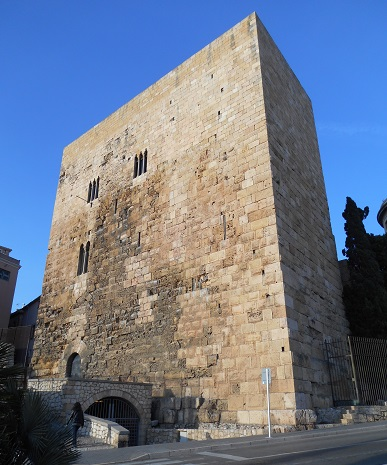

|
EL PRETORIO
|
|
 |
Junto al Museo Arqueológico se levanta el cuerpo de un edificio de planta prácticamente cuadrada, que seria el ángulo de una magnifica construcción romana. Se creía que era el palacio de Augusto, pero recientemente se ha identificado como el praetorio.
Popularmente se le conoce como el castillo de Pilatos.
En la Edad Media fue muy remodelado.
De época romana se conservan los grandes muros de sillares almohadillados, un par de puertas arquitrabadas, dos bóvedas superpuestas, la inferior subterránea y la superior con fachada a la calle de Pilatos, donde destacan adornos de orden corintio.
La sala abovedada inferior comunica con un gran pasadizo formado por la bóvedas del sostén del graderío del Circo. Otra porción de bóvedas del circo romano, se halla en la bajada de San Hermenegildo, sobrepasando los siete metros de altura. El edificio se ha incorporado al Museo Arqueológico. |
.